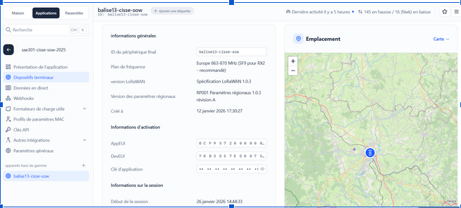
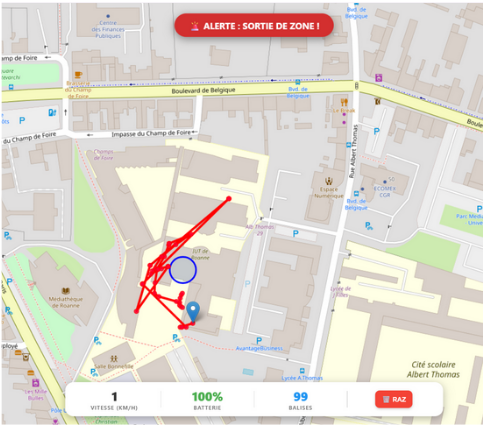

Système de transmission IoT (LoRaWAN)
Déploiement complet d'une chaîne d'acquisition de données IoT. Exploitation de la technologie longue portée et basse consommation LoRaWAN pour répondre à des besoins de télémétrie en zone non couverte par les réseaux cellulaires traditionnels.
1. Contexte & Objectifs
Le suivi d'objets connectés ou de capteurs environnementaux nécessite souvent de s'affranchir des contraintes énergétiques et tarifaires des réseaux 4G/5G. Ce projet (SAÉ 3.01) met en œuvre une infrastructure de type LPWAN (Low Power Wide Area Network). L'objectif applicatif était d'assurer la remontée de données de capteurs (ex: géolocalisation lors d'événements sportifs comme des marathons) sur de longues distances.
2. Solutions Techniques Déployées
- Configuration matérielle (End Devices) : Paramétrage des capteurs finaux (paramètres radio, bandes de fréquences, clés de chiffrement OTAA/ABP) pour émettre sur le réseau LoRa.
- Infrastructure de collecte : Déploiement d'une passerelle radio (Gateway) chargée d'écouter les fréquences ISM (868 MHz en Europe) et de relayer les trames captées vers le serveur central via un lien IP.
- Cœur de réseau IoT : Administration d'un Network Server. Enregistrement des Devices (AppEUI, DevEUI), gestion de la déduplication des trames, et décodage de la charge utile (Payload) hexadécimale en format structuré (JSON).
3. Résultats & Validation
L'infrastructure globale (Device -> Gateway -> Network Server -> Application) est pleinement fonctionnelle. Les capteurs parviennent à remonter leurs informations sur plusieurs kilomètres avec une consommation énergétique minimale.

Provisioning IoT : Enregistrement sécurisé des capteurs sur le Network Server (Gestion des clés de session).

Traitement des données : Réception des paquets radio et décodage applicatif de la charge utile (Payload).
4. Bilan technique & Expertise acquise
Compréhension des compromis RF (Radio Fréquence) : La configuration fine de la modulation radio (Spreading Factor - SF) a été une étape clé. J'ai pu expérimenter physiquement que l'IoT impose un compromis strict : augmenter la portée du signal (SF12) dégrade drastiquement le débit de données et augmente l'occupation du canal.
Architecture de bout en bout : J'ai acquis une vision globale du parcours de la donnée IoT. Je suis désormais capable de concevoir une architecture hybride, partant d'une trame radio brute (LoRa) pour la transformer en donnée exploitable via une API (MQTT/HTTP) pour le client final.